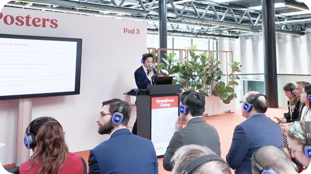
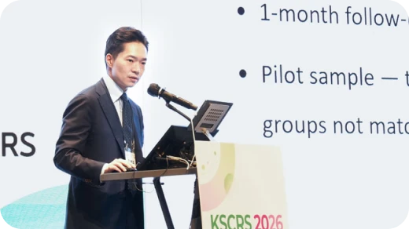
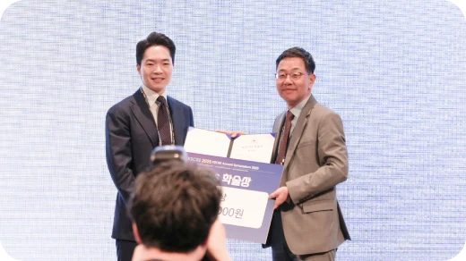
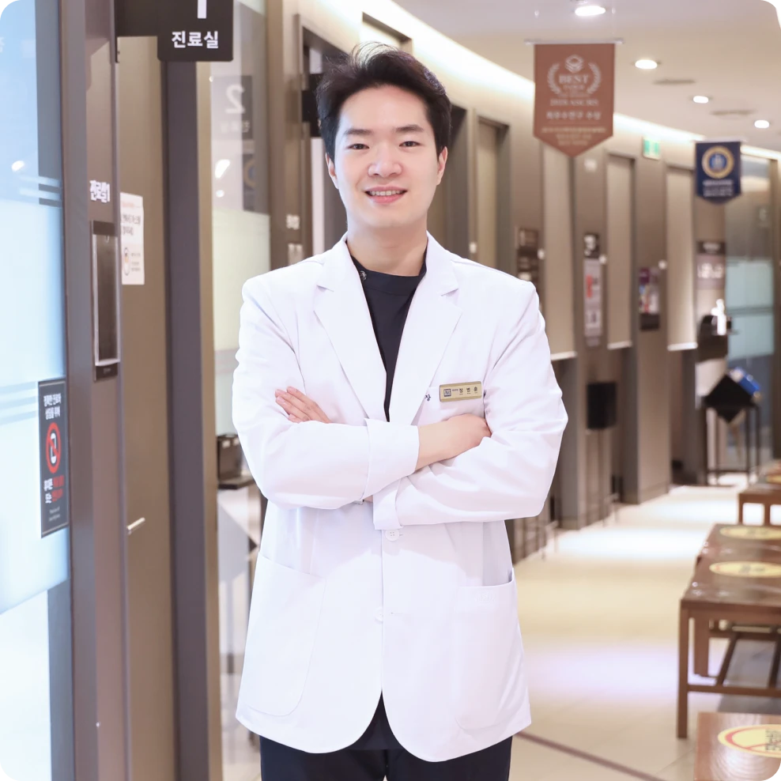
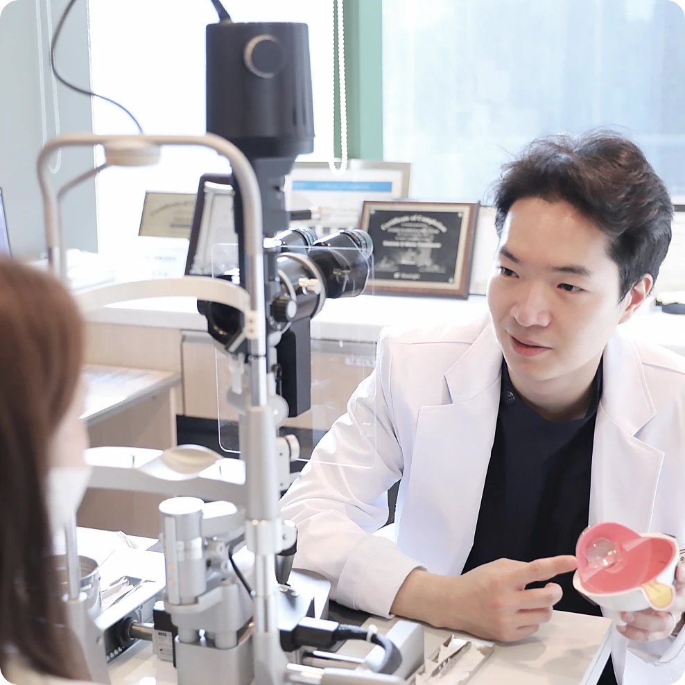
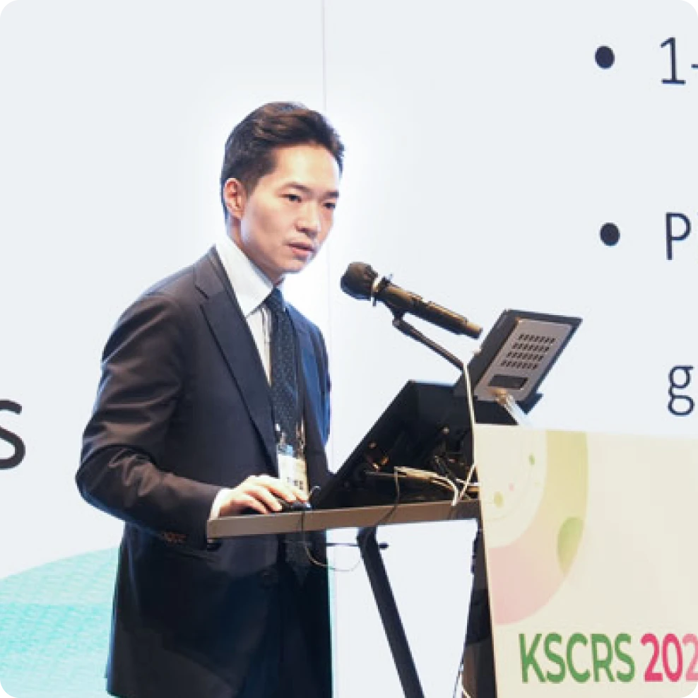
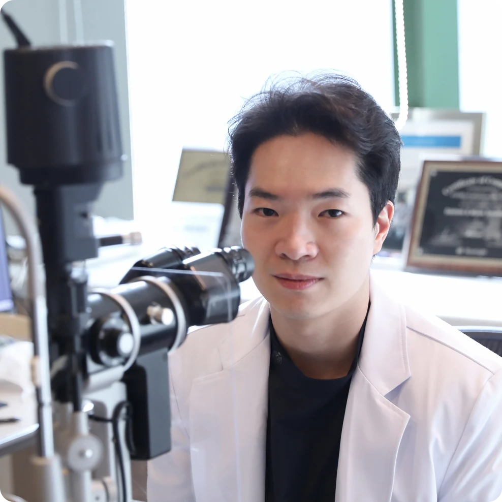

- 학력 및 경력
- 대표 논문
- 학회·강연
- 관련 뉴스
학력 및 경력
Academic & Professional Background

- 1
2025 KSCRS 논문부문 학술상 (AJO, V4c ICL 장기적 임상결과)
- 2
SMILE Certificated Expert Doctor (Zeiss)
- 아이리움안과 대표원장
- 연세대학교 의과대학 졸업
- 연세대학교 의과대학 안과학교실 외래조교수
- 전) 연세대학교 세브란스병원 안과 전문의
- SMILE Certified Expert Doctor (ZEISS)
- EVO ICL/TICL Expert Surgeon (STAAR Surgical)
- 전) 경상북도 문경시 호계보건지소장
- 전) 연세대학교 의과대학 안과학교실 외안부 강사
- 전) 가톨릭관동대학교 국제성모병원 안과 임상조교수
- 가톨릭관동대학교 국제성모병원 안과 조교수
- 2025 KSCRS 논문부문 학술상 (AJO, V4c ICL 장기적 임상결과)
-
V4c ICL 렌즈삽입술 10년 장기 안전성 및 임상 결과 연구(공동 제1저자) : 시력, 내피세포 밀도, 볼트 분석. 10-Year Clinical Outcomes of V4c Implantable Collamer Lens Implantation: Longitudinal Analysis of Visual Acuity, Endothelial Cell Density, and Vault Dynamics.2024 Aug 12. AJO. doi: 10.1016/j.ajo.2024.08.007.
-
레이저 수술 후 시력 저하 사례에 대한 렌즈 삽입술 시행 결과. 3-month surgical outcomes of Implantable Collamer Lens implantation for myopic regression after laser vision correction surgeries: a retrospective case series.BMC Ophthalmol. 2021 Nov 16;21(1):397. doi: 10.1186/s12886-021-02163-3. Dec 2021.
-
타원 스마일 수술 후 재교정을 위한 커스텀 아이즈 시행. Customized Wavefront-Optimized Transepithelial Photorefractive Keratectomy for a Retained Lenticule Fragment After Primary SMILE.J Refract Surg. 2020 Jun 1;36(6):395-399. doi: 10.3928/1081597X-20200512-01. May 2020.
-
Clinical outcomes of immediate transepithelial photorefractive keratectomy after suction loss during small incision lenticule extraction.2020 May. JCRS. ;46(5):756-761.
-
스마일 수술 후 건조증 발생 정도 규명. Comparing Dry Eye Disease After Small Incision Lenticule Extraction and Laser Subepithelial Keratomileusis.Cornea. 2020 Apr;39(4):501-507. doi:10.1097/ICO.0000000000002240.
-
스마일(SMILE) 수술 후 발생한 중심이탈(decentration)을 다양한 각막 분석 지도를 이용해 측정·평가한 연구. Decentration measurements using Placido corneal tangential curvature topography and Scheimpflug tomography pachymetry difference maps after small-incision lenticule extraction.J Refract Surg. 2019 Aug;45(8):1067-1073. doi: 10.1016/j.jcrs.2019.03.019. Aug 2019.
-
스마일 프로 ㆍ스마트노바 최신 임상 결과
2026 한국백내장굴절수술학회 ‘자동 중심이탈·안구회선 보정을 적용한 스마트노바 임상 결과’
2025 ZEISS APAC Symposium 스마일프로 난시교정효과 및 각막 생체역학력 연구
2026 대만 헬스케어 포럼 스마트노바를 이용한 저에너지·고정밀 렌티큘 수술

-
맞춤형 시력교정술 및 노안교정 강연
2025 유럽백내장굴절수술학회 각막 지형도 기반 예측 알고리즘 적용한 맞춤 시력교정술
2024 대만 굴절교정술학회 커스텀아이즈 및 프레즈비맥스 노안수술법

-
ICL 렌즈삽입술 장기적 임상 결과
2025 한국백내장굴절수술학회 ICL렌즈삽입술 논문부문 학술상
2024 유럽백내장굴절수술학회 V4C ICL렌즈삽입술 10년 간 장기적 임상결과

-

[정병훈원장 칼럼] 라식·라섹 후 백내장 수술 앞둔 50·60대, '좋은 렌즈'보다 먼저 확인할 것2026.08.07 -

[정병훈원장 칼럼] 스마일라식, 같은 1.0인데 만족도는 왜 다를까? 시력의 질을 좌우하는 고위수차와 수술 중심2026.07.30 -

아이리움안과 정병훈 원장, '자동 중심 보정 시력교정술' 임상 연구 결과 발표2026.07.16 -

[정병훈원장 칼럼] 스마일라식 후 비행기 타도 될까? 여름방학·휴가철 시력교정술 체크포인트2026.07.03
정병훈 대표원장 주요 성과
-
아이리움 안내렌즈삽입술 15년의 성과
-
아이리움 최진영 대표원장, EVO ICL 공로상 (2025 ICL Forum Tokyo)
-
아이리움 ICL 10년간 수술결과 연구 논문, SCI 학술지 AJO(미국안과학회지)등재
-
렌즈삽입술 라식과 다른 점? UBM검사 필요한 이유는?